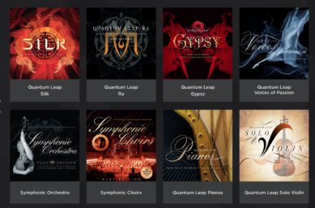

<?xml version="1.0" encoding="UTF-8"?><rss version="2.0"
	xmlns:content="http://purl.org/rss/1.0/modules/content/"
	xmlns:wfw="http://wellformedweb.org/CommentAPI/"
	xmlns:dc="http://purl.org/dc/elements/1.1/"
	xmlns:atom="http://www.w3.org/2005/Atom"
	xmlns:sy="http://purl.org/rss/1.0/modules/syndication/"
	xmlns:slash="http://purl.org/rss/1.0/modules/slash/"
	xmlns:itunes="http://www.itunes.com/dtds/podcast-1.0.dtd"
xmlns:rawvoice="http://www.rawvoice.com/rawvoiceRssModule/"
xmlns:googleplay="http://www.google.com/schemas/play-podcasts/1.0"

xmlns:georss="http://www.georss.org/georss" xmlns:geo="http://www.w3.org/2003/01/geo/wgs84_pos#"
>

<channel>
	<title>sound design &#8211; SCOREcastOnline.com</title>
	<atom:link href="." rel="self" type="application/rss+xml" />
	<link>http://www.scorecastonline.com</link>
	<description>Global Community for the Professional Media Composer</description>
	<lastBuildDate>
	Sun, 07 Apr 2019 10:06:34 +0000	</lastBuildDate>
	<language>en-US</language>
	<sy:updatePeriod>
	hourly	</sy:updatePeriod>
	<sy:updateFrequency>
	1	</sy:updateFrequency>
	<generator>https://wordpress.org/?v=5.1.1</generator>
<!-- podcast_generator="Blubrry PowerPress/7.4" mode="advanced" feedslug="feed" Blubrry PowerPress Podcasting plugin for WordPress (https://www.blubrry.com/powerpress/) -->
	<itunes:summary>Global Community for the Professional Media Composer</itunes:summary>
	<itunes:author>sound design &#8211; SCOREcastOnline.com</itunes:author>
	<itunes:image href="../../../wp-content/plugins/powerpress/itunes_default.jpg" />
	<itunes:subtitle>Global Community for the Professional Media Composer</itunes:subtitle>
	<image>
		<title>sound design &#8211; SCOREcastOnline.com</title>
		<url>../../../wp-content/uploads/powerpress/sig-SCO.jpg</url>
		<link>http://www.scorecastonline.com</link>
	</image>
<site xmlns="com-wordpress:feed-additions:1">29563098</site>	<item>
		<title>REVIEW: EastWest Composer Cloud</title>
		<link>../../../2016/06/18/ewcloud/</link>
				<comments>../../../2016/06/18/ewcloud/#respond</comments>
				<pubDate>Sat, 18 Jun 2016 17:14:30 +0000</pubDate>
		<dc:creator><![CDATA[Stellita Loukas]]></dc:creator>
				<category><![CDATA[Product reviews]]></category>
		<category><![CDATA[ethnic]]></category>
		<category><![CDATA[gear]]></category>
		<category><![CDATA[sound design]]></category>
		<category><![CDATA[strings]]></category>
		<category><![CDATA[subscription]]></category>

		<guid isPermaLink="false">../../../?p=2290</guid>
				<description><![CDATA[A terrific solution for anyone looking to expand or cultivate a wide palette with just one purchase.]]></description>
								<content:encoded><![CDATA[<p><strong>COMPOSER CLOUD</strong> by <a href="http://soundsonline.com" target="_blank">Eastwest</a><br />
<strong>$29.99 &#8211; $49.99/month</strong></p>
<hr />
<p>EastWest is very well-known name in all composer households. Their ground-breaking EastWest Quantum Leap Symphony Orchestra was one of the first full-fledged orchestral sample libraries to be developed and still is one of the best entry-level libraries around.</p>
<p class="p1"><span class="s1">Since then, EastWest has continued to constantly innovate by presenting top-quality indispensable tools, spanning a large variety of styles. In 2015, EastWest introduced Composer Cloud and became the first sample library developer to offer a subscription plan for a sample-based product. </span></p>
<p class="p1"><span class="s1">While this new model was initially met with mixed responses across the composer community, more and more composers are signing up. So let’s take a look at what the Composer Cloud is and how it can enhance your daily work.</span></p>
<div class="page" title="Page 1">
<div class="layoutArea">
<div class="column">
<h2>General Overview</h2>
<div class="page" title="Page 1">
<div class="layoutArea">
<div class="column">
<p class="p1"><strong>HOW IT WORKS</strong></p>
<p class="p1"><span class="s1">The concept is rather simple really. All you need to do is download the EW Installation center from the Support section of the website. This requires you to sign into your personal EW account and as soon as the Installation Center is installed on your computer, all your previous purchases (before the introduction of the subscription model) and your current subscription are automatically reflected. </span></p>
<p class="p1"><span class="s1">The Installation Center conveniently manages everything pertaining to your EW libraries. It allows you to download, install, and activate any library you wish, it displays any updates available for your current EW software and it also allows you to relocate libraries should you choose to migrate them to another disk. </span></p>
<p class="p1"><span class="s1">A very pleasant surprise was the download speeds. Downloading almost all of the EW libraries took me just a few hours on a 50bpm DSL connection and the entire process was rather painless.</span></p>
<p class="p1"><span class="s1"><b>THE SUBSCRIPTION PLANS</b></span></p>
<p class="p1"><span class="s1">The introduction of Composer Cloud essentially gives a subscriber access to over 10,000 instruments for a yearly or monthly fee. All Composer cloud subscriptions include the entire EW catalog of libraries and the only difference is the different microphone positions included. </span></p>
<p class="p1"><span class="s1">The subscription model comes in 3 different versions : <em>Composer Cloud</em>, <em>Composer Cloud </em>X, and <em>Composer Cloud Plus</em>:</span></p>
<table style="height: 462px;" width="838" cellspacing="0" cellpadding="0">
<tbody>
<tr>
<td valign="top"></td>
<td valign="top">
<p style="text-align: center;"><span style="color: #000000; font-family: Helvetica; font-size: small;"><b>Composer Cloud</b></span></p>
</td>
<td valign="top">
<p style="text-align: center;"><span style="color: #000000; font-family: Helvetica; font-size: small;"><b>Composer Cloud X</b></span></p>
</td>
<td valign="top">
<p style="text-align: center;"><span style="color: #000000; font-family: Helvetica; font-size: small;"><b>Composer Cloud Plus</b></span></p>
</td>
</tr>
<tr>
<td valign="top"><span style="color: #000000; font-family: Helvetica; font-size: small;"><b>Cost</b></span></td>
<td valign="top">
<p align="center"><span style="color: #000000; font-family: Helvetica; font-size: small;">$29.99</span></p>
</td>
<td valign="top">
<p align="center"><span style="color: #000000; font-family: Helvetica; font-size: small;">$29.99</span></p>
</td>
<td valign="top">
<p align="center"><span style="color: #000000; font-family: Helvetica; font-size: small;">$49.99</span></p>
</td>
</tr>
<tr>
<td valign="top"><span style="color: #000000; font-family: Helvetica; font-size: small;"><b>Commitment</b></span></td>
<td valign="top">
<p align="center"><span style="color: #000000; font-family: Helvetica; font-size: small;">Monthly</span></p>
</td>
<td valign="top">
<p align="center"><span style="color: #000000; font-family: Helvetica; font-size: small;">Yearly (paid monthly)</span></p>
</td>
<td valign="top">
<p align="center"><span style="color: #000000; font-family: Helvetica; font-size: small;">Yearly (paid monthly)</span></p>
</td>
</tr>
<tr>
<td valign="top"><span style="color: #000000; font-family: Helvetica; font-size: small;"><b>No of Instruments</b></span></td>
<td valign="top">
<p align="center"><span style="color: #000000; font-family: Helvetica; font-size: small;">10,012</span></p>
</td>
<td valign="top">
<p align="center"><span style="color: #000000; font-family: Helvetica; font-size: small;">10,012</span></p>
</td>
<td valign="top">
<p align="center"><span style="color: #000000; font-family: Helvetica; font-size: small;">12,569</span></p>
</td>
</tr>
<tr>
<td valign="top"><span style="color: #000000; font-family: Helvetica; font-size: small;"><b>Mic Positions</b></span></td>
<td valign="top">
<p align="center"><span style="color: #000000; font-family: Helvetica; font-size: small;">1</span></p>
</td>
<td valign="top">
<p align="center"><span style="color: #000000; font-family: Helvetica; font-size: small;">2</span></p>
</td>
<td valign="top">
<p align="center"><span style="color: #000000; font-family: Helvetica; font-size: small;">ALL</span></p>
</td>
</tr>
<tr>
<td valign="top"><span style="color: #000000; font-family: Helvetica; font-size: small;"><b>Bit Depth</b></span></td>
<td valign="top">
<p align="center"><span style="color: #000000; font-family: Helvetica; font-size: small;">16 bit</span></p>
</td>
<td valign="top">
<p align="center"><span style="color: #000000; font-family: Helvetica; font-size: small;">16 bit</span></p>
</td>
<td valign="top">
<p align="center"><span style="color: #000000; font-family: Helvetica; font-size: small;">24 bit</span></p>
</td>
</tr>
<tr>
<td valign="top"><span style="color: #000000; font-family: Helvetica; font-size: small;"><b>Data Size</b></span></td>
<td valign="top">
<p align="center"><span style="color: #000000; font-family: Helvetica; font-size: small;">758 GB</span></p>
</td>
<td valign="top">
<p align="center"><span style="color: #000000; font-family: Helvetica; font-size: small;">~ 1TB</span></p>
</td>
<td valign="top">
<p align="center"><span style="color: #000000; font-family: Helvetica; font-size: small;">~ 1.8TB</span></p>
</td>
</tr>
<tr>
<td valign="top"><span style="color: #000000; font-family: Helvetica; font-size: small;"><b>Delivery</b></span></td>
<td valign="top">
<p align="center"><span style="color: #000000; font-family: Helvetica; font-size: small;">Download</span></p>
</td>
<td valign="top">
<p align="center"><span style="color: #000000; font-family: Helvetica; font-size: small;">Download</span></p>
</td>
<td valign="top">
<p align="center"><span style="color: #000000; font-family: Helvetica; font-size: small;">Hard Drive</span></p>
</td>
</tr>
</tbody>
</table>
<p class="p1"><span class="s1">If you are a student, you can also take advantage of the Composer Cloud Student, a monthly or yearly plan that costs $14.99 per month and includes 7 products of your choice. </span></p>
<p class="p1"><span class="s1">EW also offers the possibility to upgrade to a higher plan at any point in your subscription.</span></p>
<h2 class="p1">The PLAY Engine</h2>
<blockquote>
<p class="p1">&#8220;But… but… but… it relies on the PLAY Engine&#8221;</p>
</blockquote>
<p class="p1"><span class="s1">I know, I know. I must admit that I have had my fair share of troubles with the PLAY engine, but not so many that would stop me from enjoying the vast array of sound colors at my fingertips. PLAY is updated rather regularly and the EW support team is incredibly responsive and accommodating. Mr. Joey Medina was particularly helpful in setting me up and patiently answering any my questions.</span></p>
</div>
</div>
</div>
</div>
</div>
</div>
<div class="page" title="Page 4">
<div class="layoutArea">
<div class="column">
<h2>Performance</h2>
</div>
</div>
</div>
<div class="page" title="Page 5">
<div class="layoutArea">
<div class="column">
<p class="p1"><span class="s1">I took three months to test the basic Composer Cloud subscription in several different projects, including ones where time was absolutely of the essence. Although I am not using any SSDs for streaming my samples (just plain old 7200rpm drives), aside from a slightly increased loading time, everything worked well and the system was rather stable. </span></p>
<p class="p1"><span class="s1">Not having used any Hollywood products before I was very impressed by the very expressive quality of many of the instruments, especially the legato ones. Aside from all the very well-known libraries, all subscriptions include some lesser-known older libraries such as “56’ Stratocaster”, “Funky Ass Loops”, “Scoring Tools” and I was able to discover many hidden gems in there that are still extremely useful.</span></p>
<p class="p1"></p>
<h2>Final Observations</h2>
<p class="p1"><span class="s1">I can’t say that I will be using all 10,000 instruments in my work regularly but in my opinion, the Composer Cloud is definitely worth its money, especially now that they have introduced a month-to-month subscription. I think of it this way: very often we part with $300-$400 for a library which sounds amazing only to later find out that we can use maybe half of the patches as we imagined we would and the rest fall into obscurity. Well, spending the same amount of money for access to 10,000 instruments for an entire year (even if hypothetically we only used 5,000 of these) makes sense in my mind. Besides, new libraries are coming out every month and many sample libraries become obsolete after a few years (simply because realism is always taken to new levels with each new stride in technology). Instead of spending money on one library in perpetuity &#8211; which could become obsolete after a few years &#8211; I’d rather spend the same amount of money to ‘borrow’ 53+ of them for a year. This becomes relatively obvious when you consider that your needs often change as a composer. Your sampling arsenal could change drastically within a year just based on trends and musical tastes.</span></p>
<p class="p1">The EastWest Composer Cloud is a terrific solution for anyone looking to expand or cultivate a wide palette with just one purchase. As long as EastWest continues to innovate in the sampling market by adding products to their CC lineup over time, subscribing to this service could be a very wise move for anyone looking for the highest quality in sampled sounds.</p>
<hr />
<p class="p1"><strong>COMPOSER CLOUD</strong> by <a href="http://soundsonline.com" target="_blank">Eastwest</a><br />
<strong>$29.99 &#8211; $49.99/month</strong></p>
</div>
</div>
</div>
]]></content:encoded>
							<wfw:commentRss>../../../2016/06/18/ewcloud/feed/</wfw:commentRss>
		<slash:comments>0</slash:comments>
						<post-id xmlns="com-wordpress:feed-additions:1">2290</post-id>	</item>
		<item>
		<title>REVIEW: Marble by Cinematique Instruments</title>
		<link>../../../2016/03/30/marble/</link>
				<comments>../../../2016/03/30/marble/#respond</comments>
				<pubDate>Thu, 31 Mar 2016 06:28:59 +0000</pubDate>
		<dc:creator><![CDATA[Stellita Loukas]]></dc:creator>
				<category><![CDATA[Product reviews]]></category>
		<category><![CDATA[effects]]></category>
		<category><![CDATA[gear]]></category>
		<category><![CDATA[kontakt]]></category>
		<category><![CDATA[sound design]]></category>
		<category><![CDATA[strings]]></category>

		<guid isPermaLink="false">../../../?p=2280</guid>
				<description><![CDATA[For live and on-the-fly sound shaping that features well-recorded source material bundled with extensive effects options, Marble might be your new go-to tool.]]></description>
								<content:encoded><![CDATA[<p><strong>MARBLE</strong> by <a href="http://www.cinematique-instruments.com/page_marble.php" target="_blank">Cinematique Instruments</a><br />
<strong>240 €/ $270</strong></p>
<hr />
<p>&nbsp;</p>
<p>After releasing the <a href="../../../2016/01/11/ensemblia" target="_blank">Ensemblia</a> series last year, Germany-based developer <b><a href="http://cinematique-instruments.com/">Cinematique Instruments</a> </b>decided to switch gears and create a unique combination of their trademark traditional-meets-bizarre sounds with clever and innovative programming. The result was <strong>Marble</strong>.</p>
<div class="page" title="Page 1">
<div class="layoutArea">
<div class="column">
<p class="p1"><span class="s1">Marble is a KONTAKT-based library that runs on the full version of KONTAKT 5.3, comes with more than 800 presets, and is comprised of more than 2,500 samples.</span></p>
<h2>General Overview</h2>
<div class="page" title="Page 1">
<div class="layoutArea">
<div class="column">
<p class="p1"><span class="s1">At the core of <strong>Marble</strong> lie two parallel sound slots (called “Tracks”) equipped with their respective 16-step sequencers. But there is a twist; each of these two sequencers is completely ‘open’ &#8212; in other words, you can tweak every single one of the twelve parameters provided for each sound slot, individually for each of the 16 steps of the sequencer.</span></p>
<p class="p1"><span class="s1">One of the greatest values of this library is its flexibility and tweakability. Cinematique Instruments essentially provide us with a complex yet extremely intuitive and simple-to-use ‘system’ that allows us to combine any of the sixty-four sound sources in as many ways as our minds can imagine, sequence them and tweak each step of the sequence individually and, finally, manipulate everything in real time. </span></p>
<p class="p1"><span class="s1">The beauty of Marble lies at a single rotating ring that controls an entire effects matrix and which can allow you to shape your sound in real time. </span></p>
<p class="p1"><span class="s1"><b>THE GUI</b></span></p>
<p class="p1"><span class="s1">One of the first things I immediately loved about this library is the deceptively simple GUI. It is nicely designed and very neatly organized in a way that makes it easy to navigate. Everything is exactly where you expect it to be and you can create your own complex evolving sounds at the click of a button while being blissfully unaware of the complex mechanics and programming lying ‘behind the scenes’.  </span></p>
<p class="p1"><span class="s1">The entire <strong>Marble</strong> library is accessible via a single Kontakt-instrument patch that is organized into 4 tabs : </span></p>
<p class="p1"><span class="s1">1. The “PRESETS” tab allows you to choose any of the included 800 presets at the click of a button. Presets have been organized into categories and sub-categories that are sure to strike a cord with every modern composer, including Ambiences, Bass Lines, Sequences, Drum Beats, Rhythm Essentials and more.</span></p>
<p class="p1"><span class="s1">2. The “TRACKS” tab is where you can select a different sound source for each of the two “Tracks” and set the values for each of the two ‘open’ step sequencers. You can customize parameters such as velocity, note length, pan, tuning, shape, filter, LFO stutter, reverb, delay, time shifting and playing direction.</span></p>
<p class="p1"><span class="s1">3. The final sound/combination of the two tracks then passes through a complex effect matrix which you can customize and control in Real-Time through the “ASSIGN” tab. A 127-step sequencer allows you to easily assign parameter values for each of the onboard effects.</span></p>
<p class="p1"><span class="s1">4. Finally, the “MASTER” tab is where you can tweak your sound with a simple turning of the Marble ring (which is connected to the effects matrix at the “ASSIGN” tab), “Freeze” the sound if you wish to play along with the created sequence and set quantization and tempo parameters. </span></p>
<h2 class="p1">Malleability</h2>
<p class="p1">One thing Cinematique Instruments seems to have down really well is all the built-in ways you can mold and fashion their original sample sources into your own unique finished material sounds. With included sound sources such as drum kits, acoustic and electric basses, struck percussion, experimental string FX, woodwinds, classic synthesizers, skin percussions, glitch FX and electronic oddities galore, your possibilities are virtually endless. After you tweak to your heart&#8217;s delight, you can run the finished shape through <strong>Marble&#8217;s</strong> deep FX matrix. This process houses an extensive effects rack module, which includes low and high pass filters, face-ripping distortions, multi-band compression, randomizers, reverbs and more. By simply applying any one or combination of these parameters to your creation, Marble takes on a completely different vibe and enables you to throw your own voicings behind typically traditional instrument sources, making them perfect for video game music, trailer music production, film and TV work, or experimental media applications.</p>
<p class="p1">And…… all of this can happen in Real Time. If you are a live stage performer, this is a huge advantage that most sound libraries are slowly becoming hip to, but <strong>Marble</strong> gets exactly right directly out of the box. Every parameter is flexible on the fly and can be recorded with DAW automation for recall later on or real-time experimental performance – a major asset for the live player or experimental tweakhead composer.</p>
</div>
</div>
</div>
</div>
</div>
</div>
<div class="page" title="Page 4"></div>
<div class="page" title="Page 4">
<div class="layoutArea">
<div class="column">
<h2>Final Observations</h2>
</div>
</div>
</div>
<div class="page" title="Page 5">
<div class="layoutArea">
<div class="column">
<p class="p1"><span class="s1"><strong>Marble</strong> is a well-designed library that has clearly been created with a lot of forethought into how modern composers like to work and create. The sounds providing the raw material are top quality and have been recorded to Cinematique Instruments’ excellent standards. The ‘open’ 16-step sequencers offer a myriad of sonic possibilities and the fact that the effects matrix offers Real-Time dynamic sound shaping is, in my opinion, this library’s greatest asset. </span></p>
<p class="p1"><span class="s1"><strong>Marble</strong> is extremely playable and a lot of thought has evidently gone into creating a playable instrument that responds well to both chords and melodic lines, allowing users the freedom to create their own unique soundscapes via a simple and intuitive interface. </span></p>
<p class="p1"><span class="s1">Once again, Cinematique Instruments have created an excellent product that can easily find its way into any modern composer’s arsenal.</span></p>
<hr />
<p class="p1"><strong>MARBLE</strong> by <a href="http://www.cinematique-instruments.com/page_marble.php" target="_blank">Cinematique Instruments</a><br />
<strong>240 €/ $270</strong></p>
</div>
</div>
</div>
]]></content:encoded>
							<wfw:commentRss>../../../2016/03/30/marble/feed/</wfw:commentRss>
		<slash:comments>0</slash:comments>
						<post-id xmlns="com-wordpress:feed-additions:1">2280</post-id>	</item>
	</channel>
</rss>
